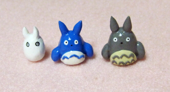
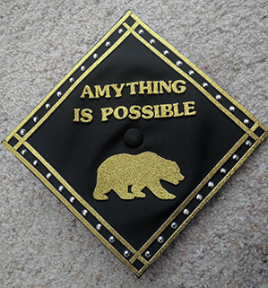

About Me
I was born and raised in Oakland, California and went to school in a neighborhood where violence, theft, and drugs were common. Even so, I love my city for the friends, teachers, and people I've met along the way, and I strived to work hard in school.

In my spare time, I love doing arts and crafts. From drawing, to making figurines out of clay, to making plush toys, the time just seems to fly by without me noticing.

It wasn't until I entered UC Berkeley as a freshman that I got introduced to Computer Science. It was fun and exciting learning something that was completely new to me. In May 2016, I graduated with a degree in Computer Science.
Contact: amylwong AT berkeley DOT edu